Vanderbilt · Learning Series · ATD facilitator guide · print edition
Delegating, Rethought, the facilitator guide

Run of show
| Screen | Full (min) | Core (min) |
|---|---|---|
| Welcome / QR | 3 | 2 |
| Objectives | 2 | 1 |
| The Chancellor's charge | 3 | <1 |
| Agenda | 1 | skip |
| 01 · The new triage | 9 | 6 |
| Manifesto | 1 | skip |
| 02 · The Routing Test | 12 | 9 |
| 03 · Stretch vs grunt | 11 | 7 |
| 04 · Role math | 12 | 8 |
| 05 · The Routing Lab | 14 | 10 |
| 06 · The handoff | 10 | 6 |
| Recap quiz | 4 | 4 |
| Capstone · My routing card | 6 | 6 |
| Glossary | 1 | skip |
| Closing · commitment | 4 | 1 |
| Total | 93 | 60 |
Audience
Managers and team leads who route real work: anyone deciding daily whether a task goes to AI, to a team member, or stays on their own plate. A Manager Voyage course. 8 to 24 works best (the routing and briefing drills run in pairs); scales larger with room votes. Assumes Start Smarter or equivalent tool fluency; the traffic-light data rule from the AI courses is assumed and restated here.
Room setup
Projector plus presenter device; learners on their own devices via the Welcome-slide QR; movable seating for pairs. A whiteboard helps: you will draw the three destinations and the three questions early and point at them all session. Virtual: breakouts of 2 for the routing, role-math, and briefing drills. Set the norm in the first minute: tasks and roles, never people's names, and nothing typed is saved or sent.
Materials
- Projector or large display and the facilitator link open (this edition)
- Facilitator laptop with arrow keys or clicker; all notifications off
- Learner devices (BYOD) joining via the welcome-slide QR
- A few printed cheat sheets (cheatsheet.html) for anyone without a device
- Printed routing cards (worksheet.html) as the no-device and projector-failure fallback
- Whiteboard or flip chart with markers for the three destinations, the three questions, and the brief-aloud rewrites
- Index cards for the pair routing drill (one task per card works well)
A week before
- Read this guide end to end, then run BOTH editions start to finish, doing every exercise, including sketching the role math for a role you genuinely manage. You will be asked what task you are holding out of habit; a real answer plays far better than a hypothetical.
- Build your own routing card in the capstone for a task you have actually been holding. You'll show the structure, never the contents.
- Send the pre-work invite (template on this page) with the calendar invite: bring one task you have been holding that someone or something else could do, held privately.
- Decide your path now: Full (90-minute slot) or Core (60). Mark which pair drills you keep versus run solo.
- Skim the current Gallup workplace AI page so the numbers in Guess the Pattern are fresh; the game's reveals carry the citations, but you should be able to say 'Gallup's tracking' with a straight face.
The day before
- Test the projector with the facilitator link; confirm the notes rail is readable from where you'll stand.
- Scan the welcome QR from the back of the room with your own phone; it must land on the learner edition.
- Run one full round of the Routing Lab and one trainer so you can drive them without looking.
- Print 5 to 10 cheat sheets and routing cards, and stock the index cards.
- Re-read the tough-questions bank; say the 'is this replacing juniors?' response out loud once. That question is coming.
30 minutes before
- Welcome slide up as people arrive; it does the enrolling for you.
- Close every other tab and app; silence the machine.
- Test arrow-key navigation and one interaction (run a Guess the Pattern round, open the lab).
- Write 'TASKS AND ROLES, NEVER NAMES' where the room can see it all session.
- Draw the three destinations (AI · stretch · keep) and the three questions (growth · judgment · volume) on the whiteboard; you'll point at them all session.
When things go sideways
If Projector or the site fails mid-session: Teach from the whiteboard: the three destinations, the three questions in order, and both handoff briefs all draw in seconds. The routing and briefing drills never needed a screen; the capstone moves to the printed card. The lab becomes a group walk-through: read each task's three options aloud and have the room vote.
If Learner devices can't join (wifi or filters): Run facilitator-only: the trainers play well on the projector with the room voting A/B/C by hands; the role-math sketch and capstone move to paper. You lose typing, not learning.
If You're 10+ minutes behind by the Routing Lab (05): Declare the Core path silently: pair drills become solo passes, debriefs shrink to one voice, and the closing tightens to the fist-to-five plus commitment round. Never cut the lab, the role-math sketch, or the capstone; they carry the session's practice objectives.
If Someone names a colleague or starts prosecuting a specific person's performance: Protect the norm warmly: 'Hold that. Tasks and roles, never names. The routing works on work, not on people.' If it keeps happening, a real staffing anxiety is usually in the room; name the role-math honesty rule (you cannot promise what the org decides, you can promise redesign happens with the person) and move the individual case to a private follow-up.
If The room hears 'delegation to AI' as layoff planning and goes quiet or hostile: Name it directly; do not talk past it. 'Let's say the quiet part: some of you are hearing headcount. Here is what this session actually argues: the manager who routes by the growth question is the one building people AI cannot replace.' Then point at the role-math section: backfill named before absorption announced, and the freed capacity given a purpose out loud. The tough-questions bank has the full honest answer; use it early rather than late.
If The room is skeptical the other way: 'our juniors need the grind, that's how we learned': Agree with the half that is true: the grind carried lessons. Then run the stretch-versus-grunt test on their own grind story: what did rep 30 teach that rep 3 did not? The lessons lived in the early reps and the feedback, and the replacement reps (verification ownership, client seats, judgment calls) deliver the same learning at higher density. Nostalgia is not a pipeline.
If AI enthusiasts want to route everything to AI today: Aim the enthusiasm at the lab: 'Run the quarter and show me.' The kickoff-deck and escalation slots do the sobering for you; enthusiasts lose the quarter on judgment tasks and no-verifier handoffs. Then hand them the growth question as their new toy: the hard call is never CAN the machine do it; it is what the routing does to the team.
If Someone raises a real data-privacy concern mid-flight: Stop and honor it; this is the one interruption that outranks the agenda. Restate the traffic light (green public, yellow internal in approved VU tools only, red private information about people, never), confirm their case against it, and if it's genuinely ambiguous, park it with a promise to route it to the right owner rather than improvising policy from the front of the room.
Tough questions, ready answers
Q: Isn't this just a nicer way to describe replacing juniors with AI?
It is the opposite, and the distinction is the whole course. Replacing juniors is what happens when managers route by the volume question alone: everything mechanical goes to the machine, the apprenticeship hollows out, and in two years there is nobody ready for the senior work. The Routing Test puts growth first precisely to stop that: stretch work goes to people even when AI is faster. What is true and worth saying honestly: the junior role changes shape. The old apprenticeship of first drafts and research passes is shrinking, and this session's answer is to build the new one deliberately: verification ownership, earlier client exposure, judgment reps with feedback.
Q: AI is faster and cheaper than a junior for almost everything routine. Why would I ever pick the slower option?
For routine work with no lesson left in it, you shouldn't; that is the volume question saying yes. The routing choice only gets interesting when the task would grow someone. Then the math changes: AI's speed advantage is measured in hours this week, and the junior's rep compounds into a person who can own the work entirely next year. A team that always takes the hours and never makes the investment ends the year faster and shallower, and the shallowness is invisible until you need someone ready. Speed today is not worth a team that never learns.
Q: My juniors WANT AI to take the boring work. Aren't I doing them a favor?
For grunt work, yes, and take the favor: nobody's career was built on the fortieth identical data pull. The test is whether the task still teaches: what did rep 30 teach that rep 3 did not? Where it gets dangerous is the tasks that feel boring to them and are actually reps: the first drafts, the research passes, the slow assembly that quietly taught the domain. Juniors are not always the best judges of which is which, because the learning in a rep is often invisible while you are doing it. Route the true grunt away, keep the true reps human, and tell them why: 'this one is yours because it builds the thing you said you wanted.'
Q: What if the person fails the stretch assignment? A client is watching.
Size the stakes, not the person. Stretch works where a fumble is affordable: internal audiences, recoverable drafts, decisions with an undo. When a client relationship is on the line, the escalation pattern from the lab applies: keep the judgment moment yourself and share the exposure, the person observes the call and owns the follow-up plan. And use checkpoints as your safety system: agreed up front, spaced by stakes, checking for attempts rather than comfort. A stretch assignment with checkpoints is a controlled risk; a stretch assignment without them is a gamble with someone else's confidence.
Q: I don't have time for briefs and checkpoints. Delegation is supposed to SAVE me time.
It does, on a delay, and the delay is shorter than it feels. The fifteen-minute brief is the whole overhead: outcome, context, checkpoint, struggle room. Skip it and you buy the dump-delegation cycle instead: wrong output, rework, resentment, and the task boomerangs back to your desk with interest. The verifier setup for AI work is the same trade: fifteen minutes of naming the check, against weeks of quietly wrong output circulating under your name. If you genuinely cannot find fifteen minutes to hand off a task, that is not a briefing problem; that is the strongest evidence in the building that you need this course's capstone.
Q: How do I tell someone AI is taking part of their job without them panicking?
In one conversation, three sentences, delivered together: here is the routine chunk AI is taking, with a named verifier from day one. Here is what backfills, tied to where you told me you want to grow. And here is what the freed capacity is for. The order matters: backfill before absorption, and the purpose said out loud, because silence gets filled with the scariest available story. One honesty rule: do not promise what the organization decides above you. Promise what you control: the redesign happens with them, the backfill is real work with feedback, and they leave the conversation more valuable than they entered it.
Q: Who verifies the AI's work? That just makes MY job bigger.
Only if you keep every verification yourself, and the course argues you mostly shouldn't. Verification ownership is a routable assignment, and for juniors it is one of the best new stretch reps available: checking claims against sources with the power to reject teaches what wrong looks like faster than years of drafting ever did. Your job is to name the verifier and make the check real (a source, a standard, a reject path), not to be the verifier of everything. What genuinely stays yours is smaller: the accountability for what ships, which was always yours anyway.
Copy-paste templates
Pre-work invite (paste into the calendar invite)
Subject: Before our Delegating, Rethought session. One thing to bring: one task you have been holding that someone, or something, else could plausibly do. A report you still build yourself, a review you never hand off, a recurring chore you do from muscle memory. You will never be asked to name people; every exercise runs on tasks and roles, and everything you type stays on your screen. Come knowing roughly what that task costs you in a normal week. That's it, no reading, no tools to install.
7-day pulse (send one week after)
Subject: One week later, did the handoff happen? Three quick lines, reply whenever: 1) Did you have the handoff conversation from your routing card? 2) Where did the task land: AI with a verifier, a stretch assignment, a split, or a deliberate keep? 3) What did the person or the verifier do with it so far? Replies come to me only. Not yet? The card still works; this note is your nudge.
30-day re-poll (send a month after)
Subject: Thirty days of routing on purpose. Two questions, same scale as the room: 1) Fist to five, how confident are you now in your routing calls: AI, stretch, or keep? 2) What did the routing free up, and what has the new rep produced: a catch in the verification log, a client meeting handled, a draft that needed less of you? Reply with a number and a line. The before-and-after pair is how we know this session did more than feel good.
After the session
Seven days out, send the pulse: 'Did the handoff conversation happen? Where did the task land, and what did the person or the verifier do with it?' At 30 days, send the re-poll: the same fist-to-five confidence question from the close, plus 'what did the routing free up, and what has the new rep produced?' The count of handoff conversations actually held is the program's headline Level 3 metric.
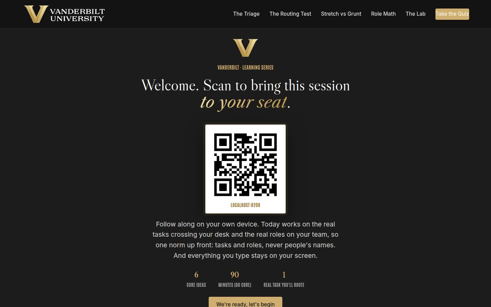
Welcome / QR Full 3 min · Core 2
Get every learner into the experience on their own device and set the norm that makes real-task material safe: tasks and roles, never names, and nothing typed leaves the screen.
Say
“Welcome. Point your camera at that code before we start. Today is about a decision you now make a dozen times a week, mostly without noticing: the same task can go to AI, to a person on your team who would grow on it, or stay with you. Nobody trained managers for that triage, and by the end of today you will have a method for it. We'll work on your real tasks and your real roles, so one ground rule for the next ninety minutes: tasks and roles, never people's names. And everything you type today stays on your screen; nothing is saved or sent anywhere.”
Do
- Have this slide projected as people arrive.
- Point at the QR and get phones up before you say anything else.
- Set the norm explicitly and early: tasks and roles, never people's names; typed exercises stay on their screens.
- Confirm by show of hands that most of the room has the site open before advancing.
Ask
“Quick calibration, shout it out: in the last week, how many of you handed at least one task to AI? And how many of you can say, honestly, that it was a decision rather than a reflex?”
Expect:
- Nearly every hand up on the first question
- Most hands down, with laughter, on the second
- One or two people defending their reflex as a decision
Respond: Name the gap warmly: 'That gap is the session. The routing is already happening on your team every day; the deciding is the part that's missing, and deciding is a management skill.'
Validate: 80%+ of the room has the deck open on a device; the room can repeat the 'tasks and roles, never names' norm back to you.
Watch for: Anyone bracing for either an AI sales pitch or a headcount conversation. The frame that relaxes both: today is a delegation session that happens to involve AI, and the first question it teaches is about growing people.
Transition: “Here's exactly what you'll walk out able to do.”
Core path: Core: one scan prompt, the norm stated once, move on.
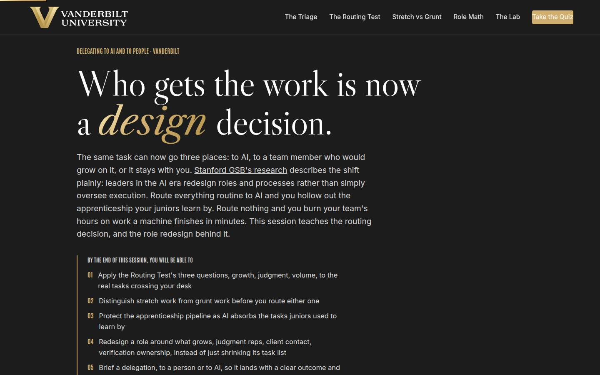
Objectives Full 2 min · Core 1
Set the contract: five capabilities, ending in one real task carded for routing with a dated handoff conversation.
Say
“Five things by the end. You'll be able to run the Routing Test, three questions in an order that matters, on any task that crosses your desk. You'll tell stretch work from grunt work before you route either one. You'll know how to keep the apprenticeship alive on your team while AI absorbs the tasks juniors used to learn by. You'll be able to redesign a role instead of just shrinking its task list. And you'll brief a delegation, to a person or to AI, so it actually lands. It all comes together in one artifact: a routing card for a task you have genuinely been holding, with a date on it.”
Do
- Read the five objectives briskly, in plain language.
- Land on the last one: this session ends with a REAL routing card, one task, one destination, one date.
- Name the sources once for credibility: Gallup's workplace tracking for the adoption numbers, Stanford GSB for the redesign framing.
Validate: Learners can say what the capstone will be (one task, one destination, one dated handoff conversation).
Watch for: Tool questions arriving early ('which AI should we use?'). Park them: the session is deliberately tool-agnostic, and the routing decision outlives any tool choice.
Transition: “One page before the plan: why the university's talent pipeline runs through your routing decisions.”
Core path: Core: objectives 1 and 5 out loud; the rest on screen.
The Chancellor's charge Full 3 min · Core <1
Connect the course to the institutional vision: the university scales on people, and the routing decisions managers make are what keep the talent pipeline growing while AI absorbs the routine.
Say
“Before the plan, the institutional why. Chancellor Diermeier's vision is one sentence with no hedge in it: Vanderbilt will define the great university of the 21st Century and be it. The how is uncommon speed, agility, and scale, and speed is the easy half; AI will happily absorb your routine work today. The hard half is scale, because an institution scales on people, and people grow on the very tasks AI now finishes in minutes. The Routing Test you learn today is how you take the speed without spending the pipeline. Our motto is the dare, Crescere aude, dare to grow, and your routing decisions are where your people get to take it.”
Do
- Read the vision sentence off the slide, slowly; it carries the page.
- Walk the three focus cards, landing on the 'The team translation' line in each.
- Point at the flywheel card: talent is the first thing reputation attracts, and routing is how a manager keeps it compounding.
- Keep it under three minutes; this page frames the session, and the sections do the teaching.
Validate: The room can connect the vision to the course in one line: the university scales on people, and routing decides whether people keep growing.
Watch for: Eye-rolls at strategy language. Ground it fast: the flywheel's talent input is decided one delegated task at a time, on desks like theirs.
Transition: “Six ideas, in a deliberate order.”
Core path: Core: under a minute. Read the vision sentence, gesture at the three focus cards, move on.
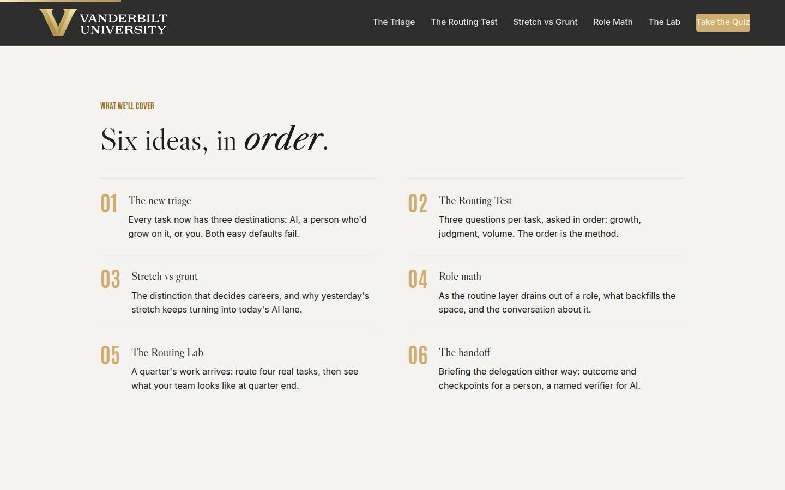
Agenda Full 1 min · Core skip
Show the arc once so learners can place each tool as it arrives: triage, test, distinction, redesign, practice, handoff.
Say
“The arc is simple: first the new triage and the evidence that it's already on your desk. Then the method, the Routing Test, and the distinction it depends on, stretch versus grunt. Then role math, for when AI changes a role's shape. Then you'll route a full quarter in the lab, and we finish with the handoff, because a right routing with a bad brief still fails.”
Do
- Walk the six items in one breath each.
- Point out the shape: the dilemma (01), the method (02 and 03), the redesign (04), the practice (05), and the craft of handing off (06).
Validate: None needed; this is orientation.
Watch for: Don't teach here; every concept has its own slide.
Transition: “Start with the evidence, because most of us think we have more time on this than we do.”
Core path: Core: skip entirely; the deck's structure carries it.
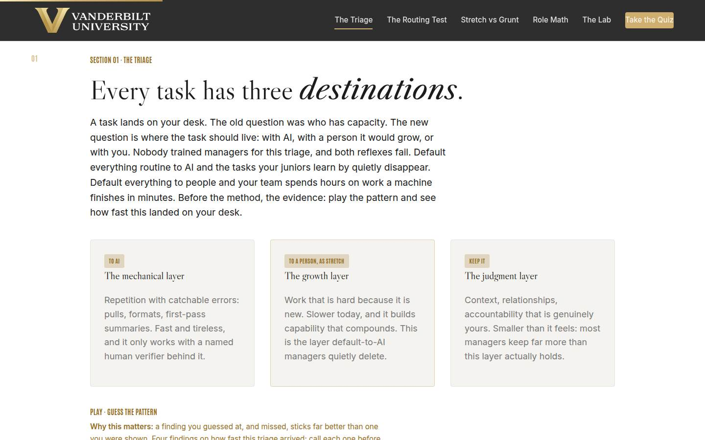
01 · The new triage Full 9 min · Core 6
Establish with guessed-at, missed numbers that AI use is spreading far faster than anyone is managing it, and that both routing reflexes (default-to-AI and default-to-people) fail, which makes the triage a designed managerial decision.
Say
“A task lands on your desk. The old question was who has capacity. The new question is where the task should live: with AI, with a person it would grow, or with you. Both easy answers fail. Route everything routine to AI and you delete the tasks your juniors learn by; the team gets faster and shallower at the same time. Route nothing and you burn your team's hours on work a machine finishes in minutes. Before the method, the evidence, and I want you to guess. Gallup has been tracking AI at work for years. Four findings; call your number before each reveal.”
Do
- Walk the three destination cards: AI takes the mechanical layer with a verifier, people take the growth layer, you keep the judgment layer, which is smaller than it feels.
- Name both failure modes out loud: default-to-AI hollows the apprenticeship; default-to-people burns hours on machine work.
- Frame the game: four findings from Gallup and Stanford GSB, guess each before it's revealed. Missed guesses are the point; they stick.
- Run Guess the Pattern on devices, or as a room vote on the projector; call for guesses out loud before each reveal.
- Run the quick check (what the default-to-AI reflex costs), then the pair activity: what moved to AI on your team, and was it a decision or a reflex?
- Count decisions versus reflexes out loud and connect it to Gallup's clear-plan number.
Ask
“What moved to AI on your team in the last few months, and be honest: was any of it a routing decision, or was it all reflex?”
Expect:
- Nearly all reflex: drafting, summarizing, quiet uses nobody reviewed
- One or two genuine decisions, usually after something went wrong once
- Someone admits they don't actually know what their team routes
Respond: For the 'don't know' answer, warmly: 'That's the most useful answer in the room; ask your team what they'd hate to give back, and the routing map appears.' For the reflex majority: 'Reflex routing is exactly what Gallup's plan number predicts. The routing already happened. The deciding is the job, and it starts now.'
Debrief: The triage is real, it is already running on your team, and nobody is managing it. The good news: it runs on three questions you can learn in one slide, which is the next one.
Validate: Quick check correct; the reflex count lands visibly and the room sees its own unmanaged routing.
Watch for: A numbers skeptic litigating survey method. Don't defend a single figure; the case is the trend: use roughly doubling in two years while barely one in five organizations has a communicated plan. Park deep methodology questions.
Transition: “One sentence before the method. Ten words that should sit behind every routing you make.”
Core path: Core: destination cards fast, Guess the Pattern as a quick room vote, quick check stays, the pair inventory becomes one show of hands with no discussion.
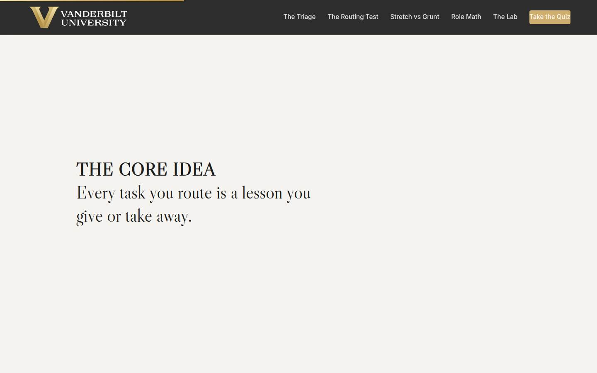
Manifesto Full 1 min · Core skip
One beat of stillness to lock the session's core idea before the method arrives.
Say
“Every task you route is a lesson you give or take away.”
Do
- Let the line animate word by word. Say nothing until it finishes.
- Read it once, slowly, then advance.
Validate: None; this is pacing.
Watch for: The urge to talk over it. Don't.
Transition: “So the first question about any task can't be about speed. Here's the order that works.”
Core path: Core: skip; say the line yourself as you pass it.
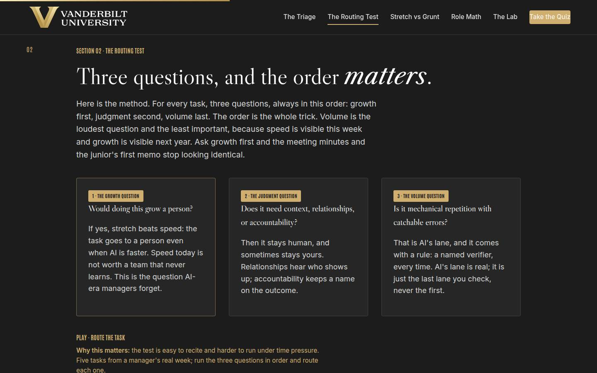
02 · The Routing Test Full 12 min · Core 9
Install the Routing Test as a fixed-order method (growth, judgment, volume) with the order itself as the teaching, and the traffic-light data rule as a hard boundary on the AI lane.
Say
“Here's the method. Three questions, always in this order. One, the growth question: would doing this grow a person? If yes, the test is over; the task goes to a person even when AI is faster, because speed today is not worth a team that never learns. Two, the judgment question: does this need context, relationships, or accountability? Then it stays human, and sometimes stays with you. Three, the volume question: is it mechanical repetition with catchable errors? That's AI's lane, always with a named verifier. The order is the whole trick: volume is the loudest question and the least important, and growth is the question this era's managers forget. And one rule sits above all three: the traffic light. Green, public or generic, go. Yellow, internal, approved VU tools only. Red, private information about people, never. The light outranks the test.”
Do
- Walk the three question cards IN ORDER, and hammer the order: growth first because it is the question AI-era managers forget; volume last because it is the loudest and least important.
- Give the worked contrast: run volume-first and the meeting minutes and the junior's first board memo look identical; run growth-first and they separate instantly.
- Send them to Route the Task: five tasks, run the questions in order, route each one.
- Walk the traffic light card and be unambiguous: green public, yellow internal in approved VU tools only, red private information about people, never. The light outranks the test.
- Run the pair drill from Go deeper: two real tasks each, three questions out loud, partner holds the order; surface the sharpest growth-versus-volume disagreement to the room.
Ask
“From the pair drill: who found a task where the growth question and the volume question disagree? What was it, roughly?”
Expect:
- The classic reps: first drafts, analyses, memos that AI could do faster and a junior needs
- Someone defends handing a growth task to AI 'just this once, deadline'
- Someone realizes their kept task fails all three questions and is pure habit
Respond: Name the pattern: 'Notice the disagreements all live between questions one and three. That conflict IS the modern delegation decision, and the order settles it: growth wins. For the deadline case: fine once, but say it out loud to the person, because a stolen rep with an explanation is a delay; a stolen rep in silence is a pattern.'
Debrief: Three questions, one order, one overriding light. Every task in the lab, and the one on your capstone card, gets exactly this treatment. The test's hardest question is telling real growth work from fake growth work, which is the next section.
Validate: 4+ of 5 on the trainer; every learner has two real tasks with written answers to all three questions, and the room can state the traffic light unprompted.
Watch for: Two drifts: answering the growth question about themselves ('I'd learn from keeping it') instead of about their people, and quiet red-light violations in AI enthusiasm ('AI could summarize the exit interviews!'). Correct both immediately and kindly; the traffic-light correction matters more than the flow of the room.
Transition: “Because the growth question only works if you can tell stretch from grunt, and that distinction decides careers.”
Core path: Core: cards and traffic light at full strength, trainer on devices; the pair drill becomes a solo pass on two of your own tasks with the growth-volume conflict marked.
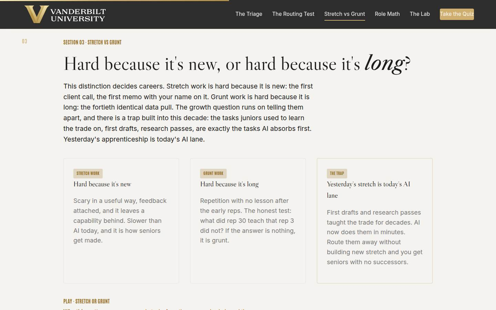
03 · Stretch vs grunt Full 11 min · Core 7
Install the stretch-versus-grunt distinction from the junior's point of view, and state the decade's trap honestly: yesterday's apprenticeship tasks are today's AI lane, so managers must deliberately build replacement reps.
Say
“This distinction decides careers, so get it exact. Stretch work is hard because it is new: the first client call, the first memo with your name on it. It comes with fear, feedback, and a capability you keep. Grunt work is hard because it is long: the fortieth identical data pull. The honest test: what did rep 30 teach that rep 3 did not? If the answer is nothing, it's grunt, and routing it to AI is a favor. Now the trap, and I'll say it honestly: the tasks juniors learned this trade on, the first drafts, the research passes, are exactly the tasks AI absorbs first. Yesterday's apprenticeship is today's AI lane, and nobody in the industry has fully solved that. What you can control is your team: build the new reps deliberately. Verification ownership. Earlier client exposure. Judgment calls with feedback. They teach faster than the grind ever did.”
Do
- Walk the three cards: stretch is hard because it is new; grunt is hard because it is long; and the trap, yesterday's stretch is today's AI lane.
- Give the honest test out loud: what did rep 30 teach that rep 3 did not?
- State the pipeline problem plainly and honestly: the industry has not solved it; a single manager can solve their team's version one role at a time.
- Send them to Stretch or Grunt: five tasks through a junior's eyes.
- Name the three replacement reps: verification ownership, earlier client exposure, judgment reps with feedback.
- Run the pair drill from Go deeper: the tasks you learned the most from, which ones AI now does, and the replacement rep for each.
Ask
“Think of the task YOU learned the most from, coming up. Does AI do it now, and if so, what's the replacement rep on your team?”
Expect:
- First drafts and research passes, and yes, AI does them now
- A client or crisis moment AI can't touch, still available as stretch
- An honest 'there is no replacement rep on my team right now'
Respond: Treat the last answer as the room's win: 'That empty space is the pipeline problem, live, on your team. The three replacement reps are the fix, and verification ownership is the easiest to install this month: it is a real judgment rep, it is needed anyway, and it comes with a signature.'
Debrief: New teaches, long repeats, and the old apprenticeship needs deliberate replacements. You now have the full growth question. Next: what happens to the ROLE when its routine layer drains away.
Validate: 4+ of 5 on the trainer; each pair produces at least one concrete replacement rep; the room can say the rep-30 test unprompted.
Watch for: Nostalgia wars ('the grind made me who I am'). Honor it, then test it: the learning lived in the early reps and the feedback, and rep 30 taught nothing. Also watch for despair at the pipeline problem; move the room from 'the industry's problem' to 'my team's version, which is solvable this quarter.'
Transition: “Because when AI absorbs a chunk of someone's job, the task list shrinks, and the role needs redesigning, never just shrinking.”
Core path: Core: cards and the rep-30 test at full strength, trainer on devices; the pair drill becomes a solo list of your own formative tasks with one replacement rep written.
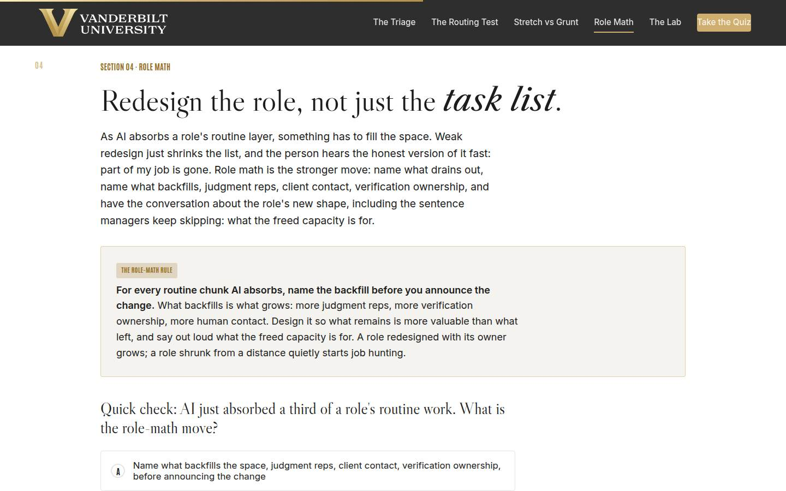
04 · Role math Full 12 min · Core 8
Teach role math (name what drains, name what backfills, say what the freed capacity is for) and get every learner one privately sketched role redesign plus the three-sentence conversation that delivers it.
Say
“When AI absorbs a third of a role's routine work, something fills the space, and the only question is whether you design it or let fear design it. The weak move is shrinking the task list and saying nothing; the person does the math themselves and the answer they reach is always scarier than yours. Role math is the strong move, three sentences delivered together. What drains: here is the routine chunk AI is taking, with a named verifier from day one. What backfills: here is what you get back, judgment reps, client contact, verification ownership, tied to where you told me you want to grow. And the sentence managers keep skipping: here is what the freed capacity is for. Say all three, in that order, with the person, never at them. One honesty rule: don't promise what the organization decides above you. Promise what you control: this redesign happens with its owner, and they leave more valuable than they came in.”
Do
- Walk the role-math rule on the gold card: backfill named BEFORE the change is announced.
- Say the hard part plainly: a shrunk task list with silence around it reads as a role on its way out, and the person starts acting accordingly.
- Run the quick check (the role-math move), then send them to the private sketch: role, routine chunk, growth. Repeat the privacy line before they type.
- Give the sketch quiet time; field 3 (what the person wants to grow toward) deserves a full minute, and 'I don't know' is a finding: it means the growth conversation hasn't happened.
- Run the pair drill from Go deeper: deliver the three sentences, partner says which one they believed least, swap.
- Name the honesty boundary out loud: never promise what the organization decides above you; promise the part you control.
Ask
“From the pair drill: which of the three sentences was hardest to say convincingly, and why?”
Expect:
- The third: most managers don't actually know what the freed capacity is for
- The second: they realize they don't know what the person wants to grow toward
- Someone found all three easy, usually because they already have the growth conversation habit
Respond: For the third-sentence majority: 'If you can't finish that sentence, that's homework before the conversation, because silence there gets filled with layoff stories.' For the second: 'Then your first move isn't role math; it's a growth conversation, and the sketch just told you so.'
Debrief: Drain, backfill, purpose: three sentences, together, with the role's owner. You now have the whole method in pieces. Time to run it at full speed.
Validate: Quick check correct; every learner has a sketched role with all three fields; pairs can say which sentence was hardest to deliver (usually the third: what the freed capacity is for).
Watch for: Learners who fill field 3 with their own plans for the person rather than what the person actually wants. Ask: 'when did they tell you that?' If the answer is never, the first move is a growth conversation, and that is a legitimate sketch outcome. Also watch for anyone treating the sketch as a headcount planning tool; the norm and the honesty rule both apply.
Transition: “Enough theory. A quarter's worth of work just landed on your desk.”
Core path: Core: rule and quick check at full strength, sketch stays at full length with its quiet minute protected; the pair delivery drops to one volunteer pair or a solo read-aloud.
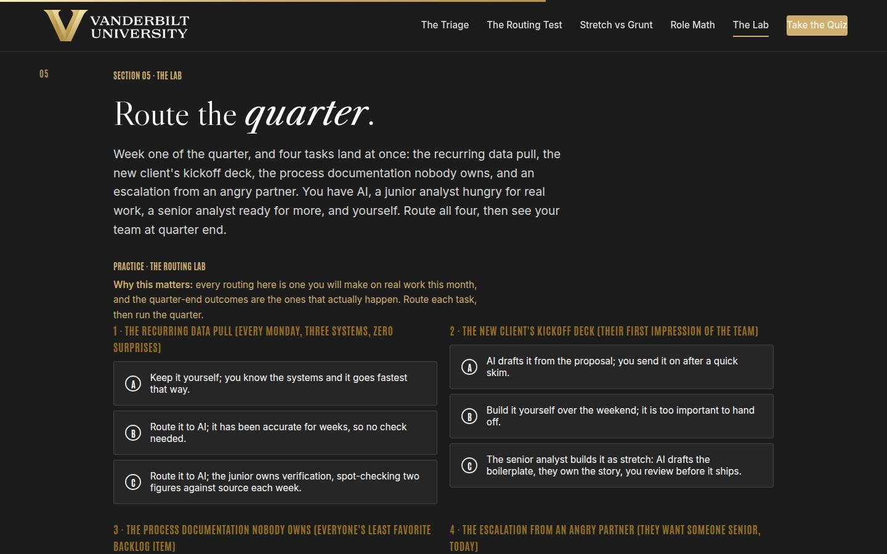
05 · The Routing Lab Full 14 min · Core 10
Give every learner a full felt rep of the method: four real tasks, one routing each, and a quarter-end outcome that rewards designed routing over reflex. The session's deepest practice block.
Say
“Week one of the quarter, and four tasks land at once: the recurring data pull, the new client's kickoff deck, the process documentation nobody owns, and an angry partner asking for someone senior, today. You have AI, a junior analyst hungry for real work, a senior analyst ready for more, and yourself. Route all four, then the lab runs the quarter and shows you your team at the end of it. One warning from everything we've covered: the lab will never punish you for how much or how little AI you used. Watch what it actually punishes.”
Do
- Set the scenario in one breath: four tasks, one week, and you have AI, a hungry junior, a ready senior, and yourself.
- Send them into the lab on devices: route each task, then run the quarter.
- Let people get their quarter-end outcome individually; the mid and weak tiers teach more than the strong one, so don't coach choices in advance.
- Ask for a show of hands by tier: who got the routed quarter, who got the silent hollow one. Have one weak-tier learner read their coach notes aloud; the room learns from the postmortem.
- Push the rerun: rethink your weakest routing and run the quarter again. The delta between runs is the lesson.
- Then the pair drill: the task on your real plate that feels least routable, and the piece of it someone could own.
Ask
“For those who hit the mid or weak tier: which single routing cost you the quarter, and would your real self have made the same call last week?”
Expect:
- The comfort-keep on the data pull: 'it's faster if I just do it'
- The no-verifier AI routing: it felt done until week eight
- An honest 'my real team runs the weak version of this today'
Respond: Treat that last answer as the room's win: 'That recognition is the whole lab. The weak quarter isn't a hypothetical; it's a description of reflex routing, which is what unmanaged AI adoption looks like. You now know all three fixes: growth first, verifier named, keep-layer kept small.'
Debrief: The lab's scoring is the session's thesis in miniature: the quarter is won or lost on routing design, and the hollow team fails silently. Your least-routable real task now has a named shareable piece, which is stretch waiting to happen.
Validate: Every learner completes at least one lab run; most reach the strong tier on a rerun; every learner can name a real task's shareable piece (observer seat, follow-up plan, or the next one like it).
Watch for: Learners who game the lab by picking the longest option everywhere without reading the coaching. The question that re-engages them: 'which of these routings would your actual team be suspicious of, and why?' Also watch clock discipline; this section has the least slack.
Transition: “One thing left. You've routed the work; now you have to hand it off so it lands.”
Core path: Core: one lab run instead of run-plus-rerun (rerun only for learners who hit weak tier), tier hands stay, the pair drill becomes a solo least-routable-task hunt. This is the floor; never cut the lab entirely.
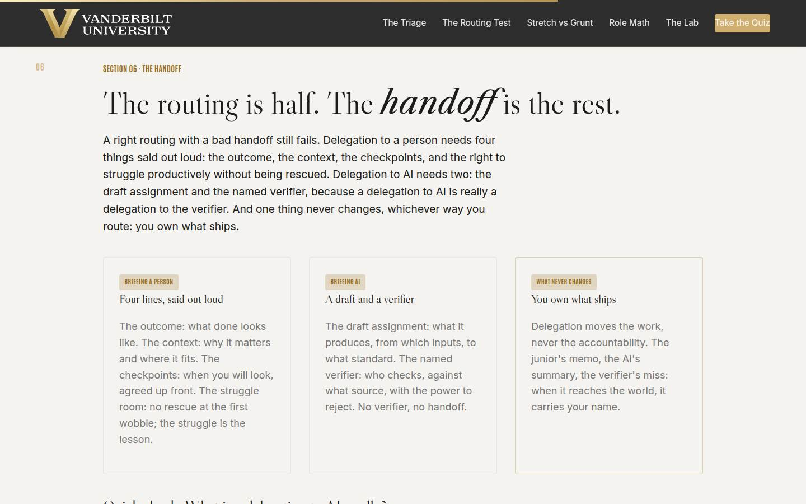
06 · The handoff Full 10 min · Core 6
Install both handoff briefs (person: outcome, context, checkpoints, struggle room; AI: draft assignment plus named verifier) and the invariant that accountability never moves: you own what ships.
Say
“A right routing with a bad handoff still fails, so here is the last piece of craft. To a person, four lines said out loud: the outcome, what done looks like. The context, why it matters and where it fits. The checkpoints, when you will look, agreed up front and spaced by stakes. And the struggle room: no rescue at the first wobble, because the struggle is the lesson. The tell that separates struggle from drowning: struggle produces attempts, drowning produces silence. Check for attempts. To AI, two lines: the draft assignment, what it produces, from what inputs, to what standard. And the named verifier, who checks, against what source, with the power to reject. Hear the reframe: a delegation to AI is really a delegation to the verifier. And one thing never changes, whichever way you route: you own what ships.”
Do
- Walk the three cards: the four-line brief to a person, the two-line brief to AI, and the invariant: you own what ships.
- Land the reframe hard: a delegation to AI is really a delegation to the verifier. No verifier, no handoff.
- Teach the struggle tell: struggle produces attempts, drowning produces silence; check for attempts, never for comfort.
- Run the quick check (what a delegation to AI really is), then send them to Judge the Handoff: five briefs, call each one.
- Run the group brief-aloud from Go deeper: one volunteer briefs the lab's kickoff deck in four lines, the room names the weak line, rebuild it together, then a second volunteer briefs the AI data pull.
- Point at the cross-reference once: the verifier's full craft lives in the Workflow and Process Redesign course.
Ask
“Think of the last delegation you gave that went sideways. Which of the four lines was missing?”
Expect:
- Context: the person did exactly what was asked and it didn't fit anything
- Checkpoints: it went quiet for three weeks and came back wrong
- Struggle room: 'honestly, I took it back at the first wobble'
Respond: For the take-it-back confession, warmly: 'That rescue felt kind and taught two lessons you didn't mean to teach: they learned you'll catch it, and you learned you can't delegate. The checkpoint is where the kindness goes; the struggle stays theirs.'
Debrief: Four lines to a person, two lines to AI, and the accountability stays home either way. That's the full method: the triage, the test, the distinction, the role math, the routing, the brief. One quiz, then the card.
Validate: 4+ of 5 on the trainer; the volunteer briefs contain all four lines; the room can finish the sentence 'a delegation to AI is really a delegation to...' unprompted.
Watch for: The manager who defends micromanagement as 'high standards.' Use the trainer's cage item: the labor got paid for and the learning got cancelled. And keep the AI items honest: 'it has been fine so far' deserves to be said in the room's own voice, because everyone has a pipeline like that somewhere.
Transition: “That's everything. Quiz first, then the only part of today that changes anything.”
Core path: Core: cards and quick check at full strength, trainer on devices; the brief-aloud shrinks to one volunteer's four-liner judged by the room.
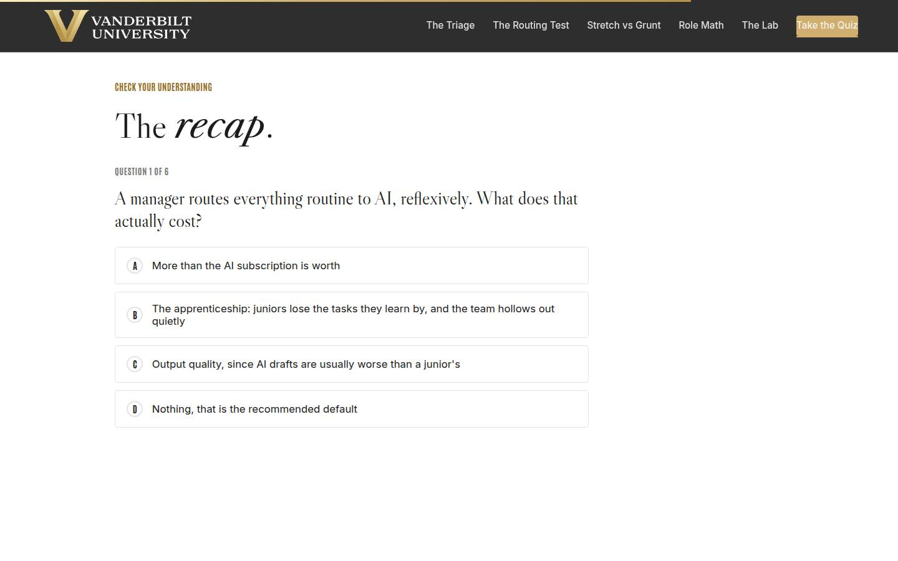
Recap quiz Full 4 min · Core 4
Score the session's knowledge against the five objectives before the capstone applies it (Kirkpatrick Level 2).
Say
“Six questions, one per big idea. This is the systems check before you write the card that leaves the room with you.”
Do
- Everyone takes it on their own device, all six questions.
- Ask for hands on 5-or-better; celebrate briefly.
- For any question the room visibly missed, do a 30-second reteach from the relevant slide, never a lecture.
Validate: Room mode at 5/6 or better. The quiz maps onto the objectives, so misses tell you exactly what to reteach.
Watch for: Racing. Frame it as the systems check before the card, never a race.
Transition: “Now the only part of today that changes anything.”
Core path: Core: keep at full length; this is the objectives' evidence.
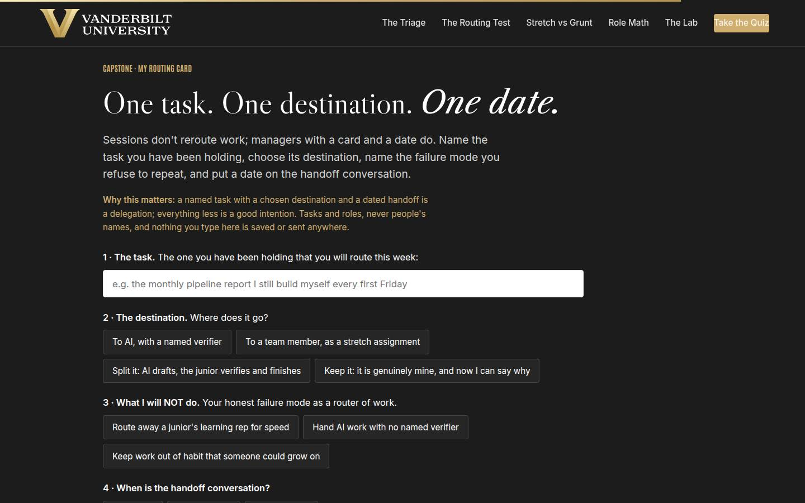
Capstone · My routing card Full 6 min · Core 6
Convert the session into one dated commitment: one held task, one chosen destination, one named failure mode, and a dated handoff conversation. The transfer artifact and the Level 3 seed.
Say
“Sessions don't reroute work. Managers with a card and a date do. Pick the task, the real one you've been holding, with its real weekly cost. Choose the destination and mean it: AI with a named verifier, a person as stretch, the split where AI drafts and your junior verifies and finishes, or keep it, on purpose, with a reason you can say out loud. Then the honest field: what you will NOT do, because you know your failure mode. Routing away a junior's rep for speed. Handing AI work with no verifier. Or keeping work out of habit that someone could grow on. And the date: when is the fifteen-minute handoff conversation? A named task with a chosen destination and a dated handoff is a delegation. Everything less is a good intention.”
Do
- Frame it: sessions don't reroute work; managers with a card and a date do.
- Repeat the privacy norm before anyone types: tasks and roles, nothing saved or sent.
- Give quiet time; this is individual work. Circulate for stuck learners: the task they flagged in section 02, or their pre-work task, is the raw material.
- Point at field 3, what you will NOT do, as the honest one: every manager in the room has one of these three failure modes.
- Push the build moment, then the close-the-loop line: after two weeks, one line of evidence, what did the routing free up and what did the person or verifier catch or learn.
Ask
“What's most likely to make you skip the handoff conversation, and what's your plan for that obstacle?”
Expect:
- No time; the week will eat it
- Fear the person reads a stretch assignment or an AI routing as a signal about their job
- Perfectionism: 'it's faster and safer if I just keep doing it'
Respond: No time: 'It's fifteen minutes against a task that costs you hours weekly; the math forgives you exactly once.' Fear: 'That's what role math is for; deliver the three sentences and the signal becomes growth.' Perfectionism: 'Faster this week, yes. Now run the rep-30 test on yourself: what is holding it still teaching you?'
Debrief: One task on your team is about to land somewhere better, with a brief that gives it a real chance. That's how teams get faster AND deeper: one designed routing at a time.
Validate: Every learner builds a card (all four fields). The card plus the 7-day pulse plus the 30-day re-poll is the evidence chain.
Watch for: Grand cards ('re-route everything on my plate'). Push to ONE task with a real weekly cost. And date-dodging: a handoff conversation 'soon' is not a commitment; help them pick the actual day on the spot.
Transition: “Reference shelf in one breath, and then the send-off.”
Core path: Core: protect at full length; never cut the capstone.
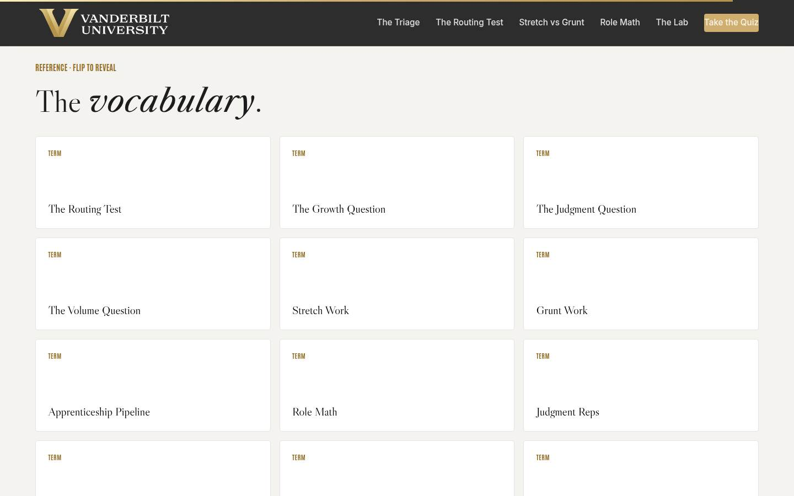
Glossary Full 1 min · Core skip
Signpost the reference layer; it lives here for after the session.
Say
“Every term from today lives here as flip cards, including the rep-30 test, for the next time someone calls the fortieth data pull a learning opportunity.”
Do
- Flip one card on the projector (Grunt Work is a good pick; the rep-30 line gets a knowing laugh and reteaches section 03).
- Tell them it's all here whenever they need the vocabulary back.
Validate: None; reference material.
Watch for: Don't tour all twelve cards; one flip makes the point.
Transition: “Last slide. One handoff conversation left.”
Core path: Core: skip; point at it verbally from the closing slide.
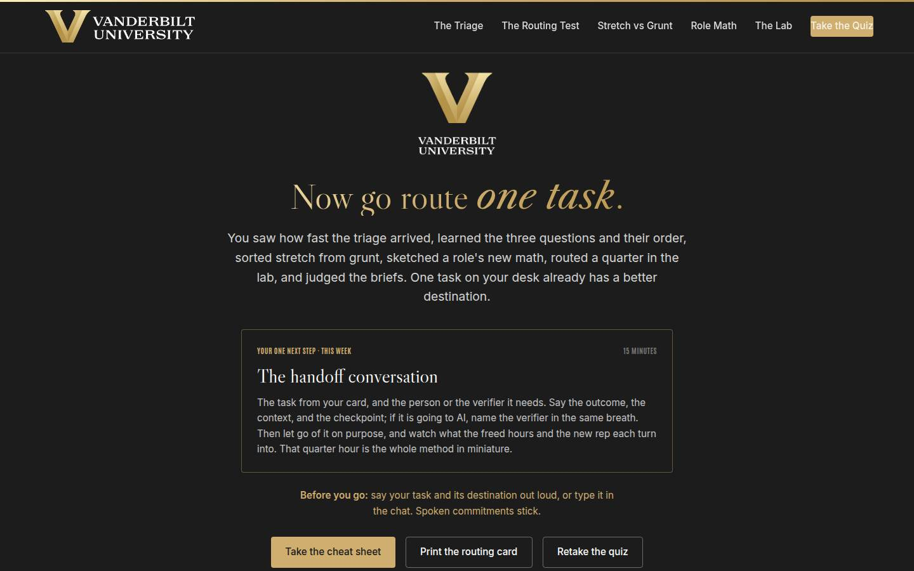
Closing · commitment Full 4 min · Core 1
Convert cards into spoken commitments, capture the Level 1 reaction check, and point at the follow-up chain.
Say
“The whole session in one breath: the triage is already on your desk, the test runs growth first, stretch and grunt are different things, roles get redesigned instead of shrunk, the lab showed you what reflex costs, and the brief is how a routing lands. You have a card. Before you go: your task, and its destination. Say it out loud; spoken commitments stick.”
Do
- Read the featured card: the one next step is the fifteen-minute handoff conversation, this week, with the person or the verifier it needs.
- Run the fist-to-five (Level 1): 'On a fist to five, how confident are you that you can run the Routing Test and have the handoff conversation?' Scan and note the number; the 30-day re-poll asks it again.
- Run the commitment round, popcorn style: task and destination, out loud or in chat.
- Point at the cheat sheet and routing card buttons; the cheat sheet is built to sit next to a task list.
- Tell them the 7-day pulse is coming, then land the last line and stop on time.
Ask
“Around the room, one line each: your task, and where it's going.”
Expect:
- 'The monthly pipeline report, to AI, my analyst verifies'
- 'The client kickoff, to my senior as stretch, I review Thursday'
- Someone commits to a deliberate keep, with the reason attached
Respond: Thank each one, no commentary. For the deliberate keep, warmly: 'Notice what just happened: keeping with a reason you can say out loud is a routing decision. That's the test working.'
Debrief: The session's success metric isn't in this room; it's the 7-day pulse: how many handoff conversations actually ran, and what the person or the verifier did with the work.
Validate: Fist-to-five mostly 3+ (Level 1); a majority state a task and a destination out loud or in chat. Count both; with the pulse and the 30-day re-poll, that's your evidence chain.
Watch for: Cards that quietly skipped the date. The commitment round catches them: no day, no commitment; help them pick one on the spot.
Transition: “Go book the fifteen minutes. And when the person surprises you with what they do with the rep, and they will, that surprise is the sound of the pipeline refilling.”
Core path: Core: fist-to-five plus a fast commitment round; the ending survives every cut.
Generated from facilitator/notes.json. The on-screen facilitator edition lives at ./ alongside this guide.